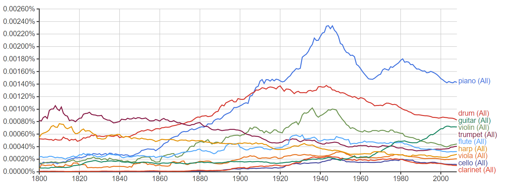

Tiny Google Auto Complete Search Box :
Used Hadoop MapReduce to build NGram language model
Used MySQL database to store the lauguage model
Used HTML, PHP, AJAX, jQuery to show auto complete web
Type a keyword :